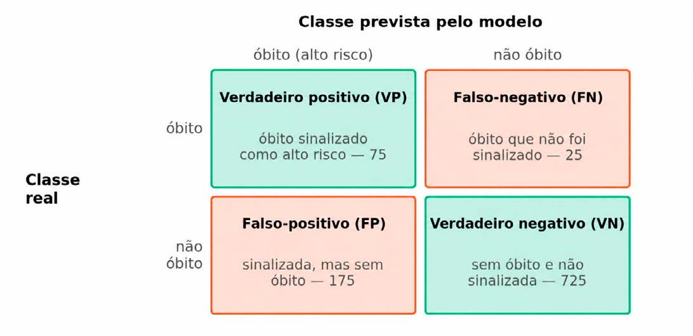
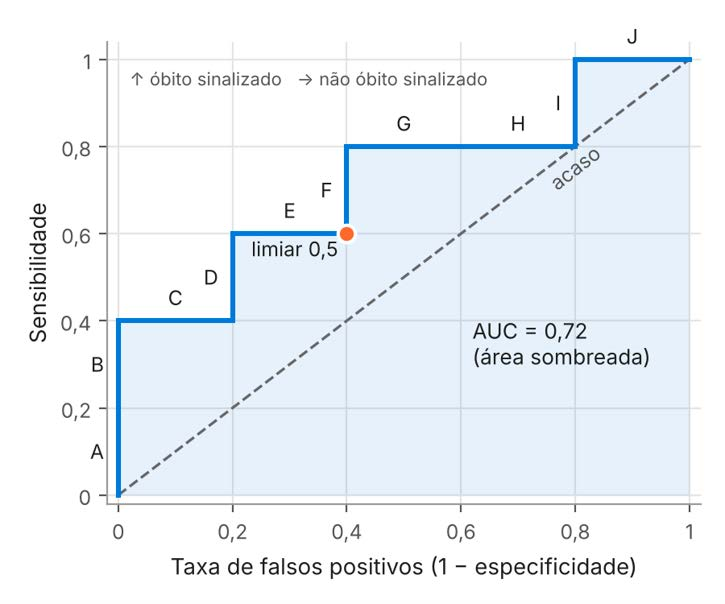
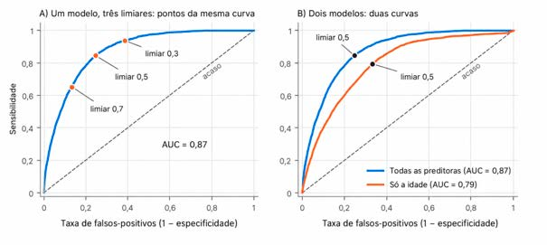

Módulo 3 | Aula 2
Machine Learning na prática: algoritmos, avaliação e pipelines com dados do SUS
Classificação: risco de óbito na internação
Separando as internações
Na classificação, a divisão entre treino e teste deve ser estratificada: o parâmetro stratify garante que a proporção de óbitos, que é pequena, seja a mesma nos dois conjuntos.
treino_int, teste_int = train_test_split(
internacoes,
test_size=0.2,
stratify=internacoes["obito"], # mesma proporção de óbitos
random_state=42
)
X_treino_c = treino_int[numericas + categoricas]
y_treino_c = treino_int["obito"]Regressão logística: de uma soma a uma probabilidade
Apesar do nome, a regressão logística é um algoritmo de classificação. Ela calcula uma soma ponderada das variáveis preditoras e a transforma, com a função logística, em uma probabilidade entre 0 e 1. Por padrão, a internação é classificada como de alto risco quando essa probabilidade é de pelo menos 0,5, o limiar de decisão. Em epidemiologia, ela estima razões de chances (inferência). Aqui, serve à predição. A floresta aleatória também tem uma versão para classificação (RandomForestClassifier), que produz probabilidades.
A matriz de confusão
Com duas classes, cada previsão cai em uma de quatro situações, organizadas na matriz de confusão (Figura 3). Os números da figura são de um exemplo: 1.000 internações, das quais 100 terminaram em óbito, e um modelo que sinalizou 250 como de alto risco.
Figura 3 - Matriz de confusão com os quatro resultados possíveis (exemplo com 1.000 internações).

Os dois erros têm consequências diferentes. Um falso-negativo é um paciente grave que não foi sinalizado e pode não receber atenção a tempo, um falso-positivo mobiliza a equipe para quem não precisava. Qual erro é mais grave não é uma pergunta técnica, depende da situação clínica e dos recursos do serviço.
Métricas de classificação: você já conhece algumas
Se você já estudou testes diagnósticos, reconhecerá as métricas da Tabela 4. O modelo funciona como um teste de rastreamento e o desfecho registrado faz o papel de padrão ouro.
Tabela 4 – Métricas de classificação calculadas com o exemplo da Figura 3.
| Métrica | Fórmula | Pergunta que responde | No exemplo |
|---|---|---|---|
| Acurácia | (VP + VN) ÷ total | Que proporção de todas as internações foi classificada corretamente? | 800 ÷ 1.000 = 80% |
| Sensibilidade (recall) | VP ÷ (VP + FN) | Dos óbitos, quantos o modelo sinalizou? | 75 ÷ 100 = 75% |
| Especificidade | VN ÷ (VN + FP) | Das internações sem óbito, quantas o modelo deixou corretamente de fora? | 725 ÷ 900 ≈ 80,6% |
| Valor preditivo positivo (precisão) | VP ÷ (VP + FP) | Das internações sinalizadas, quantas terminaram em óbito? | 75 ÷ 250 = 30% |
Fonte: Elaborada pelos autores (2026).
Repare no valor preditivo positivo de apenas 30%, apesar da sensibilidade e da especificidade razoáveis. Como nos testes de rastreamento, ele depende da frequência do desfecho: quanto mais raro o óbito, mais falsos-positivos haverá entre os sinalizados.
A acurácia engana quando uma das classes é rara. Se 5 em cada 100 internações terminam em óbito, um “modelo” que sempre prevê “não óbito” acerta 95% dos casos sem identificar nenhum óbito: sensibilidade zero. É exatamente o que faz o DummyClassifier, a nossa linha de base.
Probabilidades e limiar de decisão
O limiar funciona como o ponto de corte de um teste diagnóstico. Na glicemia de jejum, o ponto de corte de 126 mg/dL transforma um resultado contínuo em positivo ou negativo, e baixá-lo detecta mais casos, mas também produz mais falsos-positivos. No classificador, a probabilidade faz o papel do resultado do exame, e o limiar, o do ponto de corte.
A curva ROC, passo a passo
A curva ROC (do inglês receiver operating characteristic) mostra, em um único gráfico, a sensibilidade e a taxa de falsos-positivos de todos os limiares possíveis e permite comparar modelos sem escolher um limiar de antemão (Fawcett, 2006). Para entendê-la, vamos construí-la à mão.
Um modelo calculou a probabilidade de óbito de dez internações, cinco com óbito (O) e cinco sem (N), proporção escolhida para facilitar as contas. Em ordem decrescente de probabilidade:
A 0,95 (O) · B 0,85 (O) · C 0,75 (N) · D 0,65 (O) · E 0,55 (N) · F 0,45 (O) · G 0,35 (N) · H 0,25 (N) · I 0,15 (O) · J 0,05 (N)
Com o limiar de 0,5 (ponto de corte), o modelo classifica corretamente 3 dos 5 óbitos (sensibilidade de 0,6 = 3 ÷ 5). Também sinaliza, por engano, 2 das 5 internações sem óbito (C e E), e a taxa de falsos-positivos, FP ÷ (FP + VN), igual a 1 − especificidade, é 2 ÷ 5 = 0,4. Esse limiar vira um ponto do gráfico: 0,4 no eixo horizontal e 0,6 no vertical.
Repetindo a conta para cada limiar, de uma internação para a seguinte, obtemos a Tabela 5. Cada óbito alcançado pelo limiar aumenta a sensibilidade em 0,2 (1 ÷ 5), e cada internação sem óbito aumenta a taxa de falsos-positivos em 0,2. O percurso vai de nenhuma internação sinalizada (limiar acima de 0,95) até todas (limiar de 0,05). O limiar de 0,5 do exemplo dá o mesmo ponto da coluna 0,55, porque, entre esses dois valores, as internações sinalizadas são as mesmas, de A a E.
Tabela 5 – Sensibilidade e taxa de falsos positivos em cada limiar, no exemplo das dez internações (O = óbito, N = sem óbito).
| Limiar | > 0,95 | 0,95 | 0,85 | 0,75 | 0,65 | 0,55 | 0,45 | 0,35 | 0,25 | 0,15 | 0,05 |
|---|---|---|---|---|---|---|---|---|---|---|---|
| Internação incluída | — | A (O) | B (O) | C (N) | D (O) | E (N) | F (O) | G (N) | H (N) | I (O) | J (N) |
| Sensibilidade | 0 | 0,2 | 0,4 | 0,4 | 0,6 | 0,6 | 0,8 | 0,8 | 0,8 | 1 | 1 |
| Taxa de falsos positivos | 0 | 0 | 0 | 0,2 | 0,2 | 0,4 | 0,4 | 0,6 | 0,8 | 0,8 | 1 |
Fonte: Elaborada pelos autores (2026).
Ligando os pontos da Tabela 5, obtemos a curva ROC do exemplo (Figura 4), que anda em degraus: sobe quando o limiar alcança um óbito e vai para a direita quando alcança uma internação sem óbito. O limiar não aparece nos eixos, por isso a figura indica a internação de cada degrau. Um limiar gera um ponto, e a curva é o conjunto dos pontos de todos os limiares.
O canto superior esquerdo seria o modelo perfeito, com todos os óbitos sinalizados e nenhum alarme falso, e a diagonal tracejada, sinalizar ao acaso: sorteando 40% das internações, encontram-se, em média, 40% dos óbitos e 40% das internações sem óbito. Quanto mais a curva sobe antes de andar para a direita, melhor o modelo ordena as internações.
Figura 4 - Curva ROC do exemplo das 10 internações.

A área sob a curva (AUC-ROC) resume essa ordenação em um número: no exemplo, 0,72. É também a proporção de pares, formados por uma internação com óbito e uma sem óbito, em que o óbito recebeu a probabilidade maior: 18 dos 25 pares possíveis (18 ÷ 25 = 0,72). Por isso, a AUC é a probabilidade de que uma internação com óbito, sorteada ao acaso, receba do modelo uma probabilidade maior do que uma internação sem óbito também sorteada. AUC de 0,5 equivale a decidir no cara ou coroa, 1 indica separação perfeita. A AUC não depende do limiar, porque serve para comparar modelos, mas não diz qual limiar usar.
A curva ROC não mostra o valor preditivo positivo. A sensibilidade e a taxa de falsos-positivos são calculadas separadamente entre as internações com e sem óbito e não mudam quando o óbito fica mais raro, mas o valor preditivo positivo (precisão) muda. Com desfecho raro, sensibilidade e especificidade altas e, portanto, uma AUC alta, convivem com muitos alarmes falsos: no exemplo da Figura 3, com sensibilidade de 75% e especificidade de 80,6%, 175 das 250 internações sinalizadas não terminaram em óbito. Para escolher o limiar, olhe também quantas internações serão sinalizadas e quantas terminarão em óbito.
Classes desbalanceadas
Quando uma classe é bem menos frequente, muitos algoritmos favorecem a majoritária: a acurácia fica alta e a sensibilidade, baixa. Há três caminhos principais:
- Ajustar o limiar, como vimos acima.
- Dar mais peso à classe minoritária durante o treinamento com class_weight="balanced", de modo que errar um óbito custe mais do que errar uma internação sem óbito.
- Reamostrar os dados de treino, duplicando ou criando exemplos sintéticos da classe minoritária (como faz o SMOTE) ou reduzindo a majoritária. Como aprende com os dados, a reamostragem deve ser feita só no treino, dentro do pipeline.
Desbalanceamento de classes não é o mesmo que equidade. O class_weight="balanced" equilibra o peso dos óbitos e das internações sem óbito no treinamento, mas não garante que o modelo acerte igualmente em diferentes grupos, como homens e mulheres, faixas etárias ou regiões de residência. Como a aula anterior destacou, a equidade precisa ser monitorada avaliando-se o desempenho do modelo em cada grupo. Um dos exercícios desta aula faz essa verificação.
Mão na massa: comparando classificadores
A receita é a mesma, agora com pipelines. Começamos por um único candidato: uma regressão logística com class_weight="balanced", encadeada ao preparo. A validação cruzada também é estratificada (StratifiedKFold) e pedimos três métricas: acurácia, sensibilidade (recall, no scikit-learn) e AUC. O parâmetro max_iter aumenta o número de iterações para que o ajuste da regressão logística convirja.
from sklearn.model_selection import StratifiedKFold
from sklearn.linear_model import LogisticRegression
logistica_pesos = Pipeline([
("preparo", preparo),
("modelo", LogisticRegression(class_weight="balanced", max_iter=1000))])
validacao_estrat = StratifiedKFold(n_splits=5, shuffle=True, random_state=42)
notas = cross_validate(logistica_pesos, X_treino_c, y_treino_c,
cv=validacao_estrat,
scoring=["accuracy", "recall", "roc_auc"])
print(f"acurácia = {notas['test_accuracy'].mean():.2f} | "
f"sensibilidade = {notas['test_recall'].mean():.2f} | "
f"AUC = {notas['test_roc_auc'].mean():.2f}")Resultado:
acurácia = 0.76 | sensibilidade = 0.85 | AUC = 0.87O pipeline se comporta como um único modelo: em cada rodada, o cross_validate() refaz o preparo só com as partes de treino. Agora, comparamos esse candidato com a linha de base, com a mesma regressão logística sem pesos e com uma floresta aleatória. Com os candidatos em um dicionário, basta um laço for:
from sklearn.dummy import DummyClassifier
from sklearn.ensemble import RandomForestClassifier
classificadores = {
"Linha de base": DummyClassifier(strategy="most_frequent"),
"Regressão logística": Pipeline([
("preparo", preparo),
("modelo", LogisticRegression(max_iter=1000))]),
"Logística com pesos": logistica_pesos,
"Floresta aleatória": Pipeline([
("preparo", preparo),
("modelo", RandomForestClassifier(
n_estimators=200, min_samples_leaf=20, random_state=42))]),
}
for nome, modelo in classificadores.items():
notas = cross_validate(modelo, X_treino_c, y_treino_c, cv=validacao_estrat,
scoring=["accuracy", "recall", "roc_auc"])
print(f"{nome}: acurácia = {notas['test_accuracy'].mean():.2f} | "
f"sensibilidade = {notas['test_recall'].mean():.2f} | "
f"AUC = {notas['test_roc_auc'].mean():.2f}")Resultado:
Linha de base: acurácia = 0.93 | sensibilidade = 0.00 | AUC = 0.50
Regressão logística: acurácia = 0.93 | sensibilidade = 0.08 | AUC = 0.87
Logística com pesos: acurácia = 0.76 | sensibilidade = 0.85 | AUC = 0.87
Floresta aleatória: acurácia = 0.93 | sensibilidade = 0.05 | AUC = 0.88A linha de base tem acurácia de 0,93, igual à proporção de internações sem óbito, sensibilidade zero e AUC de 0,5. A regressão logística e a floresta sem pesos empatam com ela na acurácia e, no limiar de 0,5, sinalizam pouquíssimos óbitos (sensibilidade de 0,08 e 0,05), apesar da AUC bem acima de 0,5: ordenam as internações melhor do que o acaso, mas quase nunca dizem “alto risco”. É o paradoxo da acurácia na prática. Na logística com pesos, a sensibilidade sobe para 0,85, a acurácia cai para 0,76 e a AUC não muda: a ordenação das internações é a mesma, o que muda é o ponto em que o modelo passa a dizer “alto risco”. Como a floresta praticamente empata com a regressão logística na AUC (0,88 contra 0,87), seguimos com a logística com pesos, mais simples e transparente.
Informação do futuro: o vazamento na prática
Agora, um experimento deliberadamente errado. Vamos incluir entre as preditoras o tempo de permanência e os dias de UTI, informações registradas durante ou no fim da internação:
preparo_vazamento = ColumnTransformer([
("numericas", StandardScaler(), ["idade", "dias_permanencia", "dias_uti"]),
("categoricas", OneHotEncoder(handle_unknown="ignore"), categoricas),
])
com_vazamento = Pipeline([
("preparo", preparo_vazamento),
("modelo", LogisticRegression(class_weight="balanced", max_iter=1000)),
])
colunas = numericas + categoricas + ["dias_permanencia", "dias_uti"]
notas = cross_validate(com_vazamento, treino_int[colunas], y_treino_c,
cv=validacao_estrat, scoring=["recall", "roc_auc"])
print(f"Com vazamento: sensibilidade = {notas['test_recall'].mean():.2f} | "
f"AUC = {notas['test_roc_auc'].mean():.2f}")Resultado:
Com vazamento: sensibilidade = 0.87 | AUC = 0.88Compare com a logística com pesos da comparação anterior. Com esses dados, a AUC sobe apenas um pouco, de cerca de 0,87 para 0,88, e é justamente isso que torna o exemplo instrutivo: o vazamento nem sempre se anuncia com um salto de desempenho. Pequeno ou grande, o ganho é ilegítimo, pois o modelo passou a usar informações que, no momento da admissão, ainda não existem, e não poderia ser usado na prática. Quando a informação vazada carrega o próprio desfecho, como o motivo de saída do exemplo da aula anterior, o resultado fica bom demais. O mesmo cuidado vale para o linkage apresentado na aula 3 do módulo 1: cruzar as internações com o SIM, que registra apenas quem morreu, pode levar para X uma informação que carrega o próprio desfecho. Por isso, não basta desconfiar de resultados espetaculares: para cada variável de X, a pergunta é sempre se essa informação estaria disponível no momento da decisão. Não se trata de um cuidado excessivo: Kapoor e Narayanan (2023) encontraram vazamento em 294 artigos de 17 áreas científicas que usam ML, sempre com resultados otimistas demais.
Do modelo à decisão: escolhendo o limiar
O limiar também é escolhido sem olhar o teste. A função cross_val_predict() devolve, para cada internação do treino, a previsão de um modelo que não a viu durante o treinamento. Com method="predict_proba", ela traz a probabilidade de cada classe, e a coluna [:, 1] é a de óbito.
Antes de usar essas probabilidades, é preciso um cuidado. O modelo logistica_pesos foi treinado com pesos de classe (class_weight="balanced"), um dos caminhos para lidar com classes desbalanceadas que vimos acima. Na nossa base, somente cerca de 7% das internações terminam em óbito. Sem nenhum ajuste, o modelo poderia prever “sem óbito” para quase todas e ainda acertar 93% das vezes, sem identificar quase nenhum óbito. Os pesos evitam isso. No treinamento, cada óbito passa a contar cerca de 13 vezes mais do que uma internação sem óbito (93 ÷ 7 ≈ 13). Assim, juntos, os 7% de óbitos ganham a mesma importância que os 93% sem óbito, e errar um óbito passa a custar mais caro.
Isso tem um efeito colateral: o modelo aprende como se metade das internações terminasse em óbito, e não 7%. Por isso, as probabilidades de óbito saem mais altas do que o risco real. Um valor de 0,40 não significa 40% de chance de óbito. Esses valores continuam úteis para ordenar as internações, da mais arriscada para a menos arriscada, mas não para informar a chance de óbito de cada paciente. É essa ordenação que usamos para escolher o limiar. Com os filtros da aula 2 do módulo 2, vemos como a sensibilidade e o número de sinalizados mudam com o limiar:
from sklearn.model_selection import cross_val_predict
prob_valid = cross_val_predict(
logistica_pesos, X_treino_c, y_treino_c,
cv=validacao_estrat, method="predict_proba")[:, 1]
for limiar in [0.3, 0.5, 0.7]:
sinalizado = (prob_valid >= limiar)
vp = (sinalizado & (y_treino_c == 1)).sum()
fn = (~sinalizado & (y_treino_c == 1)).sum()
print(f"Limiar {limiar}: sensibilidade = {vp / (vp + fn):.2f} | "
f"VPP = {vp / sinalizado.sum():.2f} | "
f"sinalizadas = {sinalizado.sum()}")Resultado:
Limiar 0.3: sensibilidade = 0.94 | VPP = 0.16 | sinalizadas = 13545
Limiar 0.5: sensibilidade = 0.85 | VPP = 0.21 | sinalizadas = 9330
Limiar 0.7: sensibilidade = 0.65 | VPP = 0.28 | sinalizadas = 5467No código, sinalizado = (prob_valid >= limiar) compara a probabilidade de cada internação com o limiar. O resultado é True para as internações sinalizadas, isto é, classificadas pelo modelo como de alto risco de óbito, e False para as demais. O operador ~ inverte essa condição: ~sinalizado significa “não sinalizado”. Assim, vp conta os óbitos que o modelo sinalizou (verdadeiros positivos), e fn, os óbitos que ele deixou passar (falsos-negativos). Como True vale 1 e False vale 0, o .sum() conta quantas internações atendem a cada condição. Na última linha, vp / sinalizado.sum() é o valor preditivo positivo (VPP): a proporção de óbitos entre as internações sinalizadas.
Cada limiar testado é um ponto da mesma curva ROC do modelo, desenhada com as probabilidades da validação cruzada (Figura 5A), cuja AUC é de 0,87. Ao baixar o limiar de 0,7 para 0,3, a sensibilidade sobe de 0,65 para 0,94, mas a taxa de falsos-positivos vai de 0,13 para 0,38. As internações sinalizadas passam de 5.467 para 13.545, e o VPP cai de 28% para 16%. Já um modelo só com a idade produz outra curva (Figura 5B): ele ordena pior as internações, a AUC cai para 0,79, e o mesmo limiar de 0,5 fica em outro ponto. Não existe limiar correto em geral: a escolha depende das consequências de cada erro e da capacidade do serviço, e é uma decisão clínica e de gestão, e não do algoritmo.
Figura 5 - Curvas ROC com as probabilidades da validação cruzada. A: regressão logística com pesos e os limiares de 0,3, 0,5 e 0,7, pontos da mesma curva. B: o mesmo modelo e outro que usa só a idade.

Como ler a AUC. A AUC de 0,87 não significa que o modelo acerta 87% das internações. Ela significa que, em pares formados por uma internação com óbito e outra sem óbito, o modelo dá a probabilidade maior à internação com óbito em cerca de 87 de cada 100 pares. O modelo só com a idade faz isso em 79 de cada 100. A AUC mede, portanto, a capacidade de ordenar as internações por risco. É útil para comparar modelos e para avaliar um modelo que será usado como lista de prioridade, em que importa saber quem olhar primeiro.
A AUC não informa quantas internações o modelo acerta: as duas regressões logísticas da comparação anterior, com e sem pesos, têm a mesma AUC de 0,87, mas acurácias de 0,76 e 0,93. Também não informa quantas internações sinalizadas terminarão em óbito (no limiar de 0,5, só 21%), se a probabilidade é um risco real (com pesos de classe, não é, como vimos acima) nem qual limiar usar.
A curva mostra o que a AUC esconde. Ela funciona como um cardápio de opções: na Figura 5A, encontrar 94% dos óbitos exige sinalizar 38% das internações sem óbito (limiar de 0,3), e sinalizar só 13% delas encontra 65% dos óbitos (limiar de 0,7). Como dois modelos com a mesma AUC podem ter curvas que se cruzam, quando o serviço precisa de alta sensibilidade vale compará-los na parte da curva em que ele vai operar.
Escolhido o limiar, treinamos com todo o treino e avaliamos, uma única vez, no teste. No classification_report(), a precision da classe óbito é o valor preditivo positivo, o recall dessa classe é a sensibilidade, e o recall da outra classe é a especificidade. Na matriz do scikit-learn, como na Figura 3, as linhas são as classes reais e as colunas, as previstas, mas na ordem 0 e 1: “não óbito” vem primeiro, e os verdadeiros positivos ficam no canto inferior direito.
from sklearn.metrics import confusion_matrix, classification_report
limiar = 0.5 # defina-o na etapa anterior, sem olhar o teste
logistica_pesos.fit(X_treino_c, y_treino_c)
X_teste_c = teste_int[numericas + categoricas]
prob_teste = logistica_pesos.predict_proba(X_teste_c)[:, 1]
previsto = (prob_teste >= limiar).astype(int)
print(confusion_matrix(teste_int["obito"], previsto))
print(classification_report(teste_int["obito"], previsto,
target_names=["não óbito", "óbito"]))Resultado:
[[5508 1906]
[ 77 509]]
precision recall f1-score support
não óbito 0.99 0.74 0.85 7414
óbito 0.21 0.87 0.34 586
accuracy 0.75 8000
macro avg 0.60 0.81 0.59 8000
weighted avg 0.93 0.75 0.81 8000No teste, o modelo sinalizou 509 dos 586 óbitos (sensibilidade de 0,87), mas só 21% das internações sinalizadas terminaram em óbito, resultados próximos aos da validação. A coluna f1-score combina precisão e recall em um único número e não será usada aqui.
Um modelo como esse não decide quem recebe cuidado. Ele pode ajudar a equipe a olhar primeiro para quem tem maior risco, e a responsabilidade pela decisão continua sendo dos profissionais e gestores, como discutimos na aula anterior.